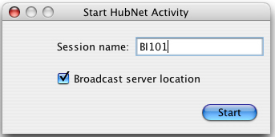
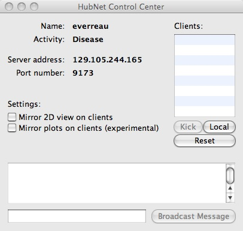

本部分介绍HubNet系统，还包括如何设置和使用HubNet活动（activity）的说明。
HubNet是一种使用NetLogo在教室里进行参与式仿真 participatory simulations 的技术。在参与式仿真中，整个班级扮演系统行为，每个学生使用个人设备，如联网计算机或TI图形计算器，控制系统的一部分。
例如，在Gridlock仿真中，每个学生控制模拟城市中的一个交通信号灯，整个班级试图使城市交通高效运行。仿真运行时收集数据，以后这些数据可以在计算机或计算器上进行分析。
要了解关于参与式仿真的更多信息和学习潜力，请访问Participatory Simulations Project web site.
NetLogo是一个可编程建模环境，带有很大的一个模型库，既有参与式仿真模型，也有传统模型。模型库覆盖的领域有社会科学和经济学，生物学和医学，物理和化学，以及数学和计算机科学。你和你的学生可以使用它们建立自己的模型。要了解更多的NetLogo信息，参见NetLogo用户手册。
传统的NetLogo仿真根据建模人员给出的规则运行。HubNet为NetLogo增加了一个维度，仿真不仅可以根据事先指定的规则运行，还可以有人直接参与。
HubNet是基于NetLogo的，在你第一次尝试HubNet之前，最好对NetLogo的基本情况有所了解。要使用NetLogo模型，参见NetLogo用户手册的 Tutorial #1: Running Models .
HubNet仿真基于客户-服务器结构。活动领导者使用NetLogo应用程序运行一个HubNet活动，当NetLogo运行一个HubNet活动时,称之为HubNet服务器。参与者使用一个客户程序登录到服务器，与 HubNet服务器进行交互。
有两种HubNet。一是 Computer HubNet，参与者在一台联网的计算机上运行HubNet客户程序。 二是 Calculator HubNet， 参与者使用TI图形计算器，计算器通过TI- Navigator系统互联。
我们希望增加对其他类型客户的支持，比如移动电话或PDA等。
在模型库的Computer HubNet Activities部分有下面的一些活动。在Participatory Simulations Project web site能找到多数模型的教学目标,以及如何在教室里进行参与式仿真的讨论。在每个模型的信息页也能找到一些信息。
有两种在计算机HubNet中使用client的方法，通过client应用或者作为Java小程序。要使用client应用，只需要安装Netlogo自带的HubNet client应用即可。要使用Java小程序，需要保存client为一个小程序，然后放在网页浏览器上，更多细节请看 applets section.
要使用计算机HubNet，活动领导者需要一台安装了NetLogo的联网计算机，每个参与者也是这样。推荐领导者使用投影将整个仿真显示给参与者。
在NetLogo模型库的HubNet Computer Activities文件夹找一个HubNet活动。建议你在正式上课之前试着练习几次。

打开一个计算机HubNet模型。NetLogo提示你输入新的HubNet会话的名字。参与者将使用这个名字来识别活动。输入一个名字，按下Start 。
NetLogo打开HubNet控制中心（Control Center），使用控制中心与HubNet服务器交互。
做为领导者，你应该通知每个人可以加入了。要加入活动，参与者打开HubNet客户程序，输入他们的名字。他们应该能看到你的活动已列出，选择该活动后，按下Enter加入活动。如果你的活动没有列出，学生可以手工输入服务器地址，该地址可以在HubNet控制中心找到。

HubNet控制中心用来和HubNet服务器进行交互。其中显示服务器的名字、活动、地址和端口号。"Mirror 2D View on clients"选择框控制参与者是否在他们的客户程序上看到视图，当然前提是客户设置了视图。"Mirror plots on clients"选择框控制参与者是否接收绘图信息。
右边的client列表显示目前连接到本活动的客户名。要去掉某参与者，在列表中选择它的名字，按下Kick按钮。要启动你自己的HubNet客户程序，按下Local按钮，当你调试活动时这个功能会很有用。"Reset"踢出所有登录客户，重新加载客户界面。
控制中心的底部显示参与者加入或离去的信息。要对所有参与者广播信息，单击最下面的编辑框，输入信息然后按下Broadcast Message 。
Client 小程序使用在HubNet应用中运行一样的界面。Client 小程序和Client可以同时在同一个活动中运行。要使用Client 小程序，首先要将Client界面保存为一个小程序。可以通过按HubNet Client Editor工具栏中的"Save Client As Applet..." 按钮来实现。
要从网上得到Client，需要将得到的html和HubNet.jar（不需要模型文件）放到网页可以访问的地方。必须要在有client小程序的电脑上运行浏览器，否则由于安全约束，client小程序就不能够与浏览器连接。
在某些网络HubNet客户程序不能自动检测HubNet服务器。告诉参与者手工输入你的HubNet服务器的地址和端口号，这些信息在控制中心显示出来。
注意：技术细节如下。为了让客户能检测到服务器，他们之间必须有多播路由。不是所有网络支持多播路由。特别是使用IPSec协议的网络一般不支持多播,很多虚拟专网(VPNs)使用IPSec协议。
如果计算机或网络有防火墙，可能会阻断HubNet服务器的通信。确保计算机和网络没有封闭HubNet服务器使用的端口（端口9173-9180）
有些活动在客户端没有视图。如果只想简单的加上视图，从Tools菜单选择"HubNet Client Editor"，加上类似的视图。确保客户登录之前按下"Reset"按钮。
必须强迫客户程序退出。在OS X上选择Apple菜单的Force Quit...，强行退出应用程序。在Windows按下Ctrl-Alt-Delete打开任务管理器，选择HubNet Client结束任务。
如果计算机休眠，HubNet服务器停止工作。如果发生这种情况，退出NetLogo应用程序重新进入。改变计算机的设置使它不再休眠。
如果HubNet 出故障，见错误报告信息 Contacting Us.
请注意:
TI-Navigator教室学习系统是为TI图形计算器设计的无线教室网络。TI-Navigator用户可以安装一个免费的NetLogo扩展包，实现与TI-Navigator的集成，使得计算器可以作为客户用于参与式仿真，就像计算机HubNet一样。该扩展包可以从Inquire Learning, LLC与TI的合作组织得到。Inquire Learning也提供计算器HubNet的支持、教学和专业开发材料。关于TI-Navigator的更多信息，访问TI网站 http://education.ti.com/navigator。关于计算器HubNet扩展包的信息，请联系Inquire Learning, 邮件地址calc-hubnet@inquirelearning.com， 或访问网站http://www.inquirelearning.com/calc-hubnet.html.
要了解关于在教室中使用NetLogo 和 HubNet 研讨会的信息，见contact us。
要学习如何编写和修该HubNet活动，参见 HubNet Authoring Guide。
要掌握如何在命令行中运行 HubNet 活动，服务器不用GUI， 参见 Controlling Guide的 HubNet 部分。
如果对计算机或计算器HubNet有什么问题，或者需要什么帮助，见 contact us。